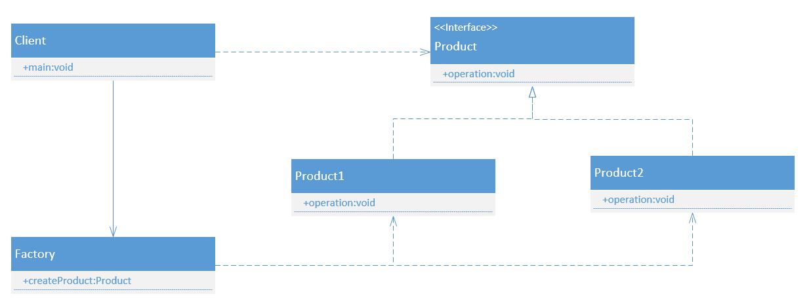

工厂模式（Factory Pattern）是 Java 中最常用的设计模式之一。这种类型的设计模式属于创建型模式，它提供了一种创建对象的最佳方式。
在工厂模式中，我们在创建对象时不会对客户端暴露创建逻辑，并且是通过使用一个共同的接口来指向新创建的对象。
简单工厂模式（Simple Factory）
介绍： 简单工厂模式其实并不算是一种设计模式，更多的时候是一种编程习惯。可以看作是工厂方法模式的一个特例。
意图： 定义”一个“工厂类，根据传入的参数不同返回不同的实例，被创建的实例具有共同的父类或接口。
主要解决： 通过定义一个单独的创建对象的方法来解决这些问题。由子类实现这个方法来创建具体类型的对象。
适用场景：
- 需要创建的对象较少
- 客户端不关心对象的创建过程
UML类图： 
代码实现：
抽象产品类：1
2
3
4//product.java
public interface Product{
void action();
}
具体产品类：1
2
3
4
5//Product1.java
public class Product1 implements Product{
public void action(){
}
}
1 | //Product2.java |
工厂类：1
2
3
4
5
6
7
8
9
10
11//Factory.java
public class Factory{
//根据参数创建不同的对象
public static Product createProduct(String productName){
if("1".euqals(productName))
return new Product1();
else if("2".euqals(productName))
return new Product2();
return null;
}
}
工厂类可以通过Java的反射机制进行进一步优化1
2
3
4
5
6
7
8//Factory.java
public class Factory{
public static Product createProduct(String className){
Class c = Class.forName(className);
Product product = (Product)c.newInstance();
return product;
}
}
工厂方法模式（Factory Method Pattern）
介绍： 工厂方法模式是简单工厂的仅一步深化， 在工厂方法模式中，我们不再提供一个统一的工厂类来创建所有的对象，而是针对不同的对象提供不同的工厂。也就是说每个对象都有一个与之对应的工厂。
意图： 定义一个创建对象的接口，让其子类自己决定实例化哪一个工厂类，工厂模式使其创建过程延迟到子类进行。
主要解决： 我们明确地计划不同条件下创建不同实例时。
如何解决： 让其子类实现工厂接口，返回的也是一个抽象的产品。
适用场景：
- 客户端不需要知道它所创建的对象的类。
- 客户端可以通过子类来指定创建对应的对象。
应用实例： 1、您需要一辆汽车，可以直接从工厂里面提货，而不用去管这辆汽车是怎么做出来的，以及这个汽车里面的具体实现。 2、Hibernate 换数据库只需换方言和驱动就可以。
优点： 1、一个调用者想创建一个对象，只要知道其名称就可以了。 2、扩展性高，如果想增加一个产品，只要扩展一个工厂类就可以。 3、屏蔽产品的具体实现，调用者只关心产品的接口。
缺点：每次增加一个产品时，都需要增加一个具体类和对象实现工厂，使得系统中类的个数成倍增加，在一定程度上增加了系统的复杂度，同时也增加了系统具体类的依赖。这并不是什么好事。
使用场景： 1、日志记录器：记录可能记录到本地硬盘、系统事件、远程服务器等，用户可以选择记录日志到什么地方。 2、数据库访问，当用户不知道最后系统采用哪一类数据库，以及数据库可能有变化时。 3、设计一个连接服务器的框架，需要三个协议，”POP3”、”IMAP”、”HTTP”，可以把这三个作为产品类，共同实现一个接口。
注意事项：作为一种创建类模式，在任何需要生成复杂对象的地方，都可以使用工厂方法模式。有一点需要注意的地方就是复杂对象适合使用工厂模式，而简单对象，特别是只需要通过 new 就可以完成创建的对象，无需使用工厂模式。如果使用工厂模式，就需要引入一个工厂类，会增加系统的复杂度。
UML类图：
代码实现：
……
抽象工厂模式（Abstract Factory Pattern）
介绍： 抽象工厂模式（Abstract Factory Pattern）是围绕一个超级工厂创建其他工厂。该超级工厂又称为其他工厂的工厂。这种类型的设计模式属于创建型模式，它提供了一种创建对象的最佳方式。
在抽象工厂模式中，接口是负责创建一个相关对象的工厂，不需要显式指定它们的类。每个生成的工厂都能按照工厂模式提供对象。
意图： 提供一个创建一系列相关或相互依赖对象的接口，而无需指定它们具体的类。
主要解决： 主要解决接口选择的问题。
何时使用： 系统的产品有多于一个的产品族，而系统只消费其中某一族的产品。
如何解决： 在一个产品族里面，定义多个产品。
适用场景：
- 和工厂方法一样客户端不需要知道它所创建的对象的类。
- 需要一组对象共同完成某种功能时。并且可能存在多组对象完成不同功能的情况。
- 系统结构稳定，不会频繁的增加对象。（因为一旦增加就需要修改原有代码，不符合开闭原则）
应用实例：
优点： 当一个产品族中的多个对象被设计成一起工作时，它能保证客户端始终只使用同一个产品族中的对象。
缺点： 产品族扩展非常困难，要增加一个系列的某一产品，既要在抽象的 Creator 里加代码，又要在具体的里面加代码。
使用场景： 1、QQ 换皮肤，一整套一起换。 2、生成不同操作系统的程序。
注意事项： 产品族难扩展，产品等级易扩展。
UML类图：
代码实现：